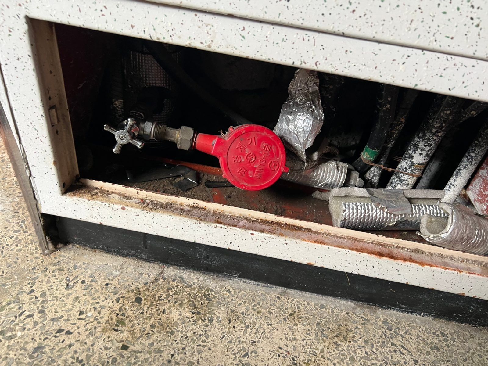

누수·배관 원인 확인·보수
물이 번지는 위치와 배관 구간을 확인하고, 탐지·철거·교체·복구가 필요한 범위를 구분해 안내합니다.
- 급수·배수 배관
- 천장·벽체 누수 흔적
- 원인 구간 사진 기록
세대 민원과 공용부 보수는 원인 확인, 승인, 시공, 보고가 한 흐름으로 이어져야 관리가 편해집니다. 만물인테리어 대표가 직접 상담하고 현장 확인 후 범위와 금액을 문서로 안내합니다.

한 건의 작은 민원부터 공용부 보수까지, 현장을 먼저 확인한 뒤 필요한 범위만 제안합니다.
물이 번지는 위치와 배관 구간을 확인하고, 탐지·철거·교체·복구가 필요한 범위를 구분해 안내합니다.
지하·옥상·복도 등 공용 구간의 배관, 방수, 타일, 도장 상태를 확인하고 공사 순서를 제안합니다.
욕실과 생활 공간의 누수 보수부터 철거한 자리의 방수·미장·타일·마감 복구까지 연결합니다.
입주민 공사 전 관리사무소 확인 절차와 안내문, 소음 양해문, 작업 일정 협의에 필요한 내용을 준비합니다.
단지명과 담당자 연락처, 관심 업무만 남기면 대표가 시험운영 방법을 안내합니다.
점검 결과는 체크리스트, 위험항목 요약, 현장사진, 보수 권고로 정리하며 실제 범위는 현장 확인 후 정합니다.
직원 포털은 등록된 이메일로 로그인하며 시설 상태·관리 일지·작업지시·공지·비용·운영보고를 권한별로 처리합니다. 입주민 시설보수 접수는 기존 단지 전용 주소와 6자리 비밀번호 화면을 계속 사용합니다.
권한은 관리소장·관리과장·동대표·입주민 역할에 따라 나뉘며, 관리자가 각 계정의 보기 범위를 설정합니다.
전화로만 끝내지 않고, 공사 전후에 확인할 내용을 단계에 맞춰 정리합니다. 실제 제공 자료는 현장과 공사 범위에 따라 달라질 수 있습니다.
협력업체를 고를 때 확인할 5가지 보기 →증상과 확인 위치, 예상 원인 구간, 추가 확인이 필요한 부분을 사진과 함께 설명합니다.
시공 범위와 제외 사항, 자재·공정, 금액을 확인한 뒤 승인받고 진행합니다.
작업 전후 사진, 완료 내용, 건별 또는 월말 정산에 필요한 기록을 정리합니다.
담당자가 현재 상태와 다음 순서를 바로 확인할 수 있도록 진행합니다.
단지명과 증상, 현장 위치, 담당자 연락처를 받습니다.
대표가 방문해 증상과 작업 가능한 범위를 확인합니다.
범위·자재·금액·일정을 안내하고 승인 후 일정을 확정합니다.
필요한 보수와 철거 구간의 마감 복구를 진행합니다.
완료 사진과 작업 내용을 정리해 전달하고 정산합니다.
업무 문의는 대표에게 직접 연락해 주세요. 새 직원 포털은 등록 이메일 인증을 사용하며, 기존 단지 전용 주소와 6자리 비밀번호 접수도 계속 이용할 수 있습니다.
동·층 또는 지하·옥상·복도 등 확인이 필요한 위치
누수, 배수 불량, 배관 파손, 방수·타일·도장 보수 등
현장 사진이 있으면 함께 보내고 방문 가능한 시간을 알려 주세요.
만물인테리어는 이 페이지에서 비밀번호·주민등록번호·신용카드·계좌정보를 요청하지 않습니다.
관리사무소 직원 포털의 개인정보 처리와 보관 기준은 개인정보처리방침에서 확인할 수 있습니다.